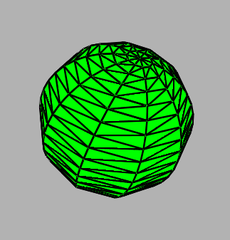
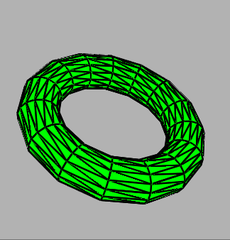
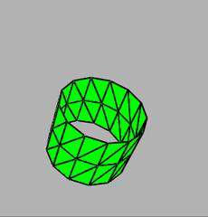
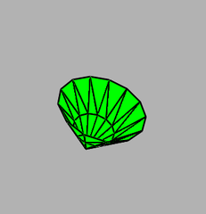
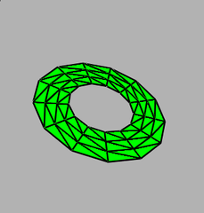

使用三角形批次类构建更多对象
Table of Contents
1 使用三角形批次类
GLTriangleBatch类是专门作为三角形的批次容器的，每个顶点都可以有一个表面法线，以进行光照计算和纹理坐标。
建立自己的三角形批次对象是一件非常简单的事。
首先，我们需要为对象创建一个事件。
GLTriangleBatch myCoolObject;
然后通知容器最多打算使用的顶点数，以开始创建网格。
myCoolObject.BeginMesh(200); // 200 verts in my cool object.
现在来添加三角形。 AddTriangle 成员函数接受一个包含3个顶点的数组，一个包含3个法线的数组，以及一个包含3个纹理坐标的数组。
void GLTriangleBatch::AddTriangle(M3DVector3f verts[3], M3DVector3f vNorms[3], M3DVector3f vTexCoords[3])
不要担心会出现重复的顶点数据（读者可能会认为三角形带或三角形扇效率会更高）。在我们每一次添加一个顶点时， GLTriangleBatch 类都会搜索重复值并对我们的批次进行优化。实际上，对于非常大的批次来说，我们可能会发现这种操作在每次添加一个新三角形时都会越来越明显地降低速度。
当我们添加完三角形时，调用End。
myCoolObject.End();
现在，我们只要选择想要的存储着色器并调用Draw函数。
myCoolObject.Draw();
库包含很多实用函数，它们可以将一个对象填充到一个 GLTriangleBatch 类中。示例程序 Objects 随着按下空格键而重复进行这个过程。
2 示例程序
3 创建一个球体
gltMakeSphere 函数引用一个三角形批次、球的半径和组成球体的片段及其堆叠数量。
void gltMakeSphere(GLTriangleBatch& sphereBatch, GLfloat fRadius, GLint iSlices, GLint iStacks);

一个球体
iSlices 参数和 iStacks 参数需要进行一点解释。我们可以将球体想像成围绕成球形的一系列三角形带。参数 iStacks 是这些从球体底部堆叠到顶部的三角形的数量。而 iSlices 参数则是围绕着球体排列的三角形对数。典型情况下一个对称性较好的球体的片段数量是堆叠数量的2倍，这是因为围绕球体一周是360°，而从底部到顶部只有180°（360°的一半）。另外需要注意的一点是，这些球体都是围绕z轴的，这样+z就是球体的顶点，而-z则是球体的底。
4 创建一个花托
花托是一种环状的像面包圈一样的物体。用来创建花托的GLTools函数是 gltMakeTorus 。
void gltMakeTorus(GLTriangleBatch& torusBatch, GLfloat majorRadius, GLint minorRadius, GLint numMajor, GLint numMinor);
其中 numMajor 和 numMinor参数的作用与球体中的 iSlices 和 iStacks 参数类似，它们是沿着主半径和内部较小半径的细分单元的数量。

一个花托
5 创建一个圆柱或圆锥
gltMakeCylinder 函数可以创建一个空心圆柱体。
void gltMakeCylinder(GLTriangleBatch& cylinderBatch, GLfloat baseRadius, GLint topRadius, GLfloat fLength, GLint numSlices, GLint numStacks);
圆柱体从0开始向z轴正方向延伸，我们既可以指定底部半径，也可以设置顶部半径。参数 numSlices 代表围绕z轴的三角形对的数量，而参数 numStacks 则代表从底部堆叠到顶部圆环的数量。

一个两端半径相等的圆柱体

一个一端半径设置为0的圆柱体，也就是一个圆锥
6 创建一个圆盘
圆盘是通过分解成若干片段的三角形带绘制而成的。我们可以指定一个内部半径来创建一个类似垫圈的形状，也可以让这个值保持为0来创建一个实心圆盘。 gltMakeDisk 用圆盘形状来填充一个 GLTriangleBatch。
void gltMakeDisk(GLTriangleBatch& diskBatch, GLfloat innerRadius, GLint outerRadius, GLint nSlices, GLint nStacks);

设置了内部和外部半径的圆盘